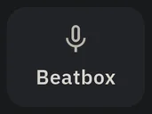
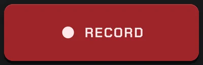
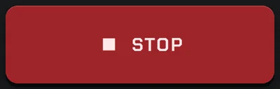
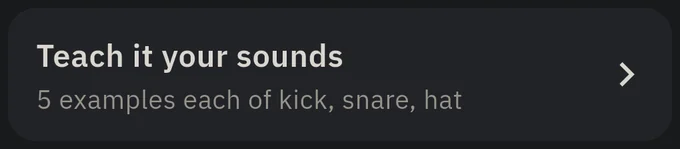
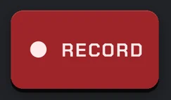
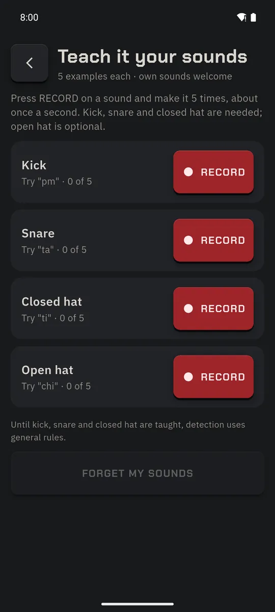
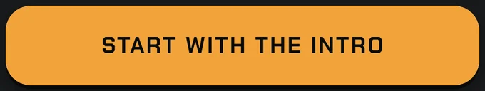
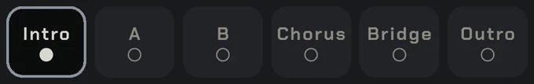

Beatbox
Turn the groove in your head into drums. Everything is analysed on the phone; nothing is uploaded.
Beatbox a groove
2 to 8 bars of “pm-ti-ta-ti” become a drum pattern.
- Library → Beatbox. Allow the microphone when asked.

- Put headphones on and switch on Click in headphones (without it, the tempo comes from your take). Pick 2, 4 or 8 bars.
- ● RECORD and beatbox: “pm” for kick, “ta” for snare, “ti” for hi-hat. ■ STOP when done.


- Your hits appear on the step grid and play back with a real kit, with a “sounds like” match from the library. Fix any hit, then make a song from the groove.
Get close to the mic. If it says “No beat heard”, try again a little louder.

Teach it your sounds
Your snare sounds like someone else's hi-hat? Teach it.
- On Record Beatbox, tap Teach it your sounds.

- For Kick, Snare and Closed hat (Open hat is optional): ● RECORD and make the sound 5 times, about once a second.

- Retake your groove. FORGET MY SOUNDS goes back to the general rules.

Beatbox Song Builder
A whole song, one section at a time.
- Library → Build a song → scroll down → Build by beatboxing.

- Choose a form (Pop, or your own section list), the tempo (Set it now or From my first take), the meter and the kit. START WITH THE INTRO.

- Each section shows a hint (“Count in or build up”, “keep it simple”, “bigger, more energy”…). ● RECORD: count along, beatbox, and it stops by itself at the last bar. From the second section on you hear the last 2 bars of the previous one first, so you can play into it.

- Keep the take, retake it, edit it or swap in the closest library groove. Repeated sections reuse your take.
- On the finish screen, ▶ plays the whole song; tap any section to redo it, then save it to the Library. Progress saves after every kept take, so you can stop and resume.